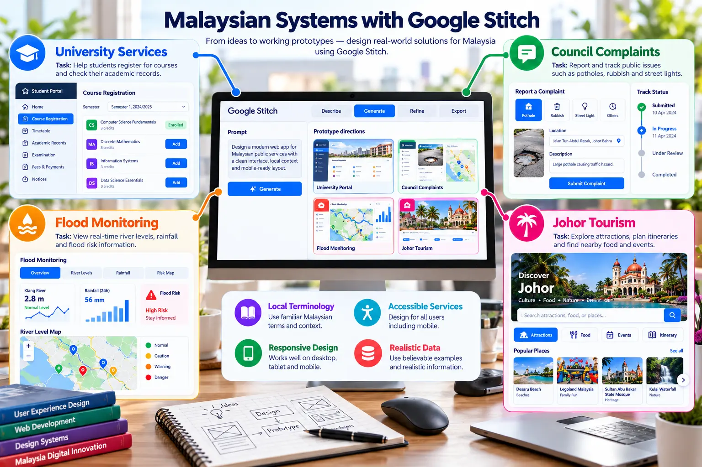
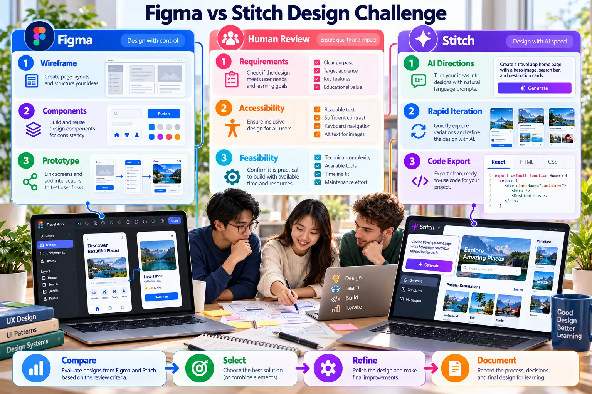

Google Stitch Case Studies
Apply prompt, evaluation, transfer and implementation workflows to data and Malaysian systems.
Dashboard evidence
RequirementsUser, task, metrics and acceptance criteria.
Prompt V1Original prompt and output.
EvaluationHierarchy, accuracy, accessibility and feasibility.
Prompt V2Targeted corrections with before-and-after evidence.

Malaysian options
University servicesRegistration, records and requests.
Council complaintsEvidence, location and resolution tracking.
Flood monitoringRiver levels, risk and alerts.
Johor tourismDiscovery, filters and itineraries.

Integrated challenge
- Create a Figma wireframe.
- Generate two Stitch directions from the same requirements.
- Compare requirements, accessibility and feasibility.
- Transfer the selected direction to Figma.
- Refine and test one complete task.
- Document prompts, decisions and AI use.